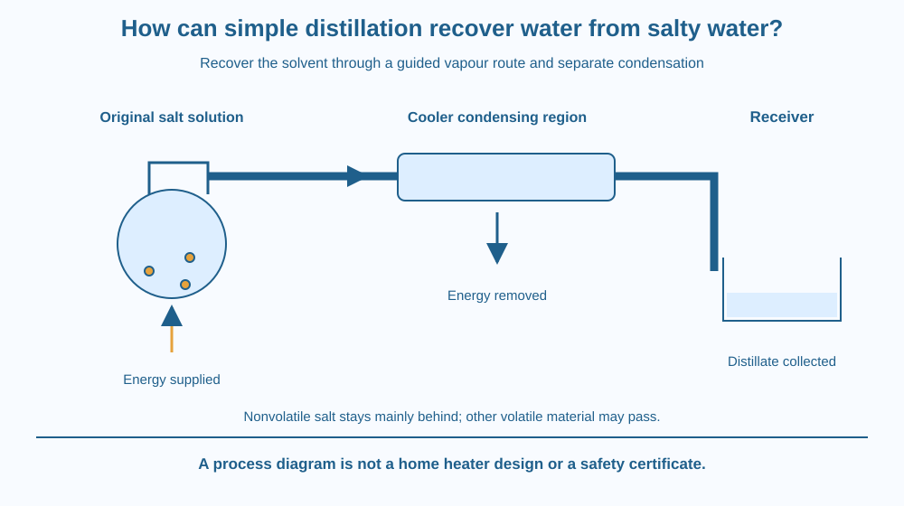

Explain how simple distillation recovers water from an appropriate salt-water mixture. Identify vaporisation, a cooler condensing region and separate collection. Distinguish recovering the solvent from collecting salt crystals, and recognise why the method is not a universal drinking-water guarantee.
Leaving salt water in an open dish can recover solid salt, but most of the water escapes into the surroundings. Suppose the goal is to collect the water instead. Its gas phase must be guided somewhere it can return to liquid and enter a separate receiver.
This changes the apparatus and the target, even though water leaving the original mixture remains part of the story. A useful separator must account for where both components go.
The question is how a phase-change route can be turned into controlled solvent recovery rather than uncontrolled loss.
Simple distillation separates material by vaporising a suitable liquid component and condensing the vapour into a different container. The collected liquid is called the distillate. The original vessel retains less volatile material as a residue or concentrated solution.
In a basic salt-water model, water readily enters the vapour under the process conditions, while ordinary dissolved sodium chloride is much less volatile. Most salt therefore remains in the original vessel rather than accompanying the water as individual dissolved ions in the vapour.
The vapour must reach a cooler region where it loses energy and condenses. A condenser provides surfaces and heat-transfer conditions that support this change. The recovered liquid is then guided into a separate receiver.
The sequence is not a chemical transformation of salt into fresh water. Water was already present and is separated through different phase behaviour. The salt remains accounted for in the original side of the system.
Apparatus design matters. Liquid droplets carried over mechanically can contaminate the distillate even if the dissolved salt itself is nonvolatile. Controlled operation and appropriate geometry help distinguish vapour transport from accidental splashing or spray.
Other dissolved substances may be volatile. They can travel with the vapour or affect separation. Simple distillation is therefore not a universal method that removes every contaminant from every unknown water sample.
Energy input and removal are both required in the process model. The source supplies energy for vaporisation, and the condensing region transfers energy away. A drawing containing only an upward vapour arrow leaves the recovery step unexplained.
The lesson differs from petroleum fractionation, which sorts a complex mixture into several boiling-range streams, and from salt crystallisation, which targets the solid solute. Here the main engineering goal is collecting the solvent while retaining a suitable nonvolatile solute.
Draw three connected regions: original mixture, guided vapour path and separate receiver. Put water symbols on both sides of the phase-change route, but keep most salt symbols in the first region.
Add energy-in and energy-out arrows at different places. The first helps produce vapour; the second helps recover liquid. This makes the thermal requirements visible without depicting a construction activity.
Then add a second hypothetical volatile component. Trace how it could also enter the receiver. The limitation is now part of the same mechanism rather than a disconnected warning. A separator works according to material properties, not according to a label saying unwanted.
The SVG shows a salt-water vessel, a vapour pathway through a cooler condensing section and a distillate receiver. Salt symbols remain mainly in the original region, while water symbols follow the recovery path.
Separate arrows show energy entering and leaving. A small possible droplet-carryover route identifies an apparatus-related contamination pathway. The drawing is schematic and not an instruction for assembling heated equipment.
A caption states that other volatile substances can also pass. The diagram therefore explains the useful salt-water model without claiming every distillate is chemically pure or safe to drink.

Solvent recovery is important in laboratories and industry. The chosen separation depends on the mixture and desired product. A familiar process name does not remove the need to understand what can travel through it.
Water-treatment discussions may mention distillation, but an actual system requires suitable design, operation and quality checks. A school paper diagram is not a validated purifier or a source of drinking-water advice.
Do not boil an unknown liquid, seal a heated container or build a home condenser for this lesson. Heat, pressure, glass and volatile substances create unnecessary risks when the intended mechanism can be learned safely on paper.
Use paper and two colours for water and salt. No heating or liquid sample is required.
Label the whole figure a separation model. The number of symbols is not a real purity measurement or recovery efficiency. Ask a partner to identify the product being collected and the energy-removal step that makes recovery possible.
Why would an open evaporation dish fail to collect most of the escaping water even if it recovered salt successfully? Separate the desired product from the mere occurrence of a phase change.
Now imagine the vapour path never becomes cool enough to condense effectively. Which stage of the process is incomplete? A correct starting vessel does not guarantee a useful liquid product if the downstream conditions are unsuitable.
What is the distillate?
Answer: B — Distillate is recovered after vapour condenses into the receiving stream.
Why does ordinary dissolved salt remain mainly in the original vessel?
Answer: C — Different volatility lets water enter the vapour while most sodium chloride stays behind.
An unknown mixture contains another volatile substance. What should you consider?
Answer: A — A volatile component can travel through the same vapour-and-condensation route.
Make a component-accounting diagram for water and a nonvolatile salt. Identify the original mixture, residue, vapour, condenser and distillate. Add both energy directions.
Include one material-related and one apparatus-related reason the collected liquid may not be perfectly pure. Your work must remain a conceptual design rather than a home heating experiment or a claim that unknown water has been made drinkable.
A process can use the same initial phase change to pursue different goals. Open evaporation may target what remains; distillation targets what leaves and is recovered. Following the desired product through every stage explains why the second method needs more than simply heating the original mixture.
Simple distillation recovers a volatile solvent through vaporisation and separate condensation, while suitable nonvolatile solutes remain mainly behind and other limitations still require attention.